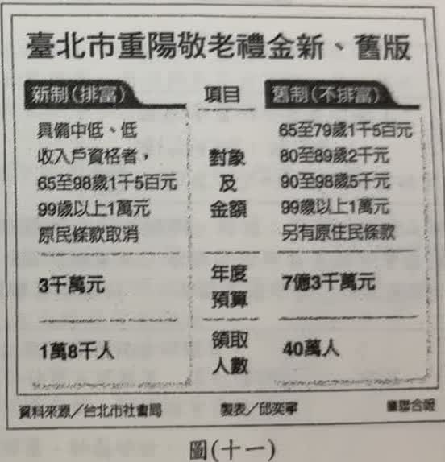
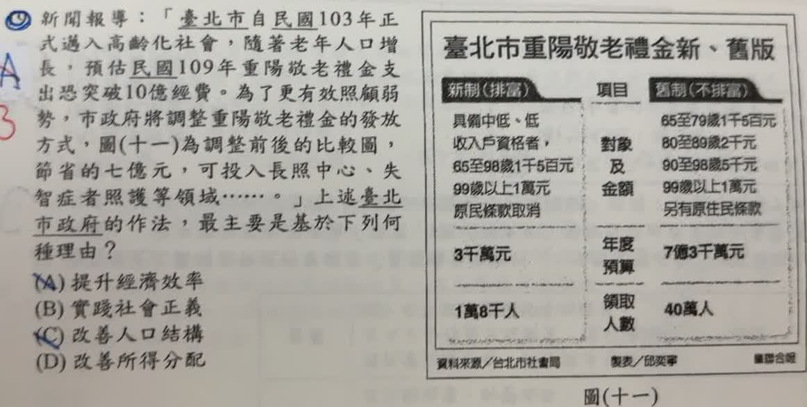

分享原卷｜第 19 題
完整原題
| 項目 | 新制（排富） | 舊制（不排富） |
|---|---|---|
| 對象及金額 | 具中低、低收入戶資格：65至98歲1,500元，99歲以上1萬元；原民條款取消 | 65至79歲1,500元；80至89歲2,000元；90至98歲5,000元；99歲以上1萬元，另有原住民條款 |
| 年度預算 | 3千萬元 | 7億3千萬元 |
| 領取人數 | 1萬8千人 | 40萬人 |

新聞報導：「臺北市自民國103年正式邁入高齡化社會，隨著老年人口增長，預估民國109年重陽敬老禮金支出恐突破10億經費。為了更有效照顧弱勢，市政府將調整重陽敬老禮金的發放方式，圖（十一）為調整前後的比較圖，節省的七億元，可投入長照中心、失智症者照護等領域……。」上述臺北市政府的作法，最主要是基於下列何種理由？
(A) 提升經濟效率
(B) 實踐社會正義
(C) 改善人口結構
(D) 改善所得分配
先想一想，再查看答案、解說與原圖
原卷作答：A
正確答案：B。把有限資源優先投入較需要照護的弱勢長者，強調資源合理分配及實質公平，符合社會正義。
逐項解析
| 選項與原句 | 判讀 | 句意與判斷理由 |
|---|---|---|
| (A) 提升經濟效率 | 不選 | 雖然節省經費可能提高資源使用效果，但文章明示目的是照顧弱勢，並非主要追求經濟產出或效率。 |
| (B) 實踐社會正義 | 應選 | 把有限資源優先投入較需要照護的弱勢長者，強調資源合理分配及實質公平，符合社會正義。 |
| (C) 改善人口結構 | 不選 | 長照服務與禮金發放的調整，不會直接改變出生、死亡或年齡人口比例，並非以改善人口結構為主。 |
| (D) 改善所得分配 | 不選 | 此政策涉及資源分配，但文中重點是照護服務與弱勢者需求，不是直接以縮小所得差距為主要目標。 |
詳細說明與解題步驟
一、先抓政策明示的目的
文章寫「為了更有效照顧弱勢」，並把節省經費投入長照中心、失智症者照護。要先從這個目的判斷，不能只看到老人增加，就選人口結構。
二、讀新舊制度的差別
舊制不排富，新制聚焦中低、低收入戶；照顧方式也從普遍發放現金，轉向更需要協助者的照護服務。這是依實際需要分配資源，而非所有人一律拿相同金額。
三、區分最主要目的與可能效果
節省經費、資源重分配都可能發生，但選項中最能概括題幹目的的是 B「實踐社會正義」。D 並非完全沒有分配意涵，卻不是文章最主要強調的政策目標。
題圖是原卷當時政策的比較資料，作答以文中的條件為準。
原AI曾把圖表改述成依所得分級發1萬元、7千元、5千元，與原卷不符。原圖的新制是具中低、低收入戶資格者，65至98歲1,500元、99歲以上1萬元；不是前述所得分級金額。網站依原圖保留新舊制表格。
核對註記：已核對題幹、全部選項與必要材料；教材對應課次未確認，歸綜合。
原圖（僅本題）
